TOR checklist คทง.3 ลำดับ 101–136
เฉพาะคลินิกเบาหวาน/ความดัน + ช่องทาง Fast Track ที่จุดคัดกรองกลาง · ข้อความใน Excel · แก้อะไร · ดูยังไงทีละขั้น · ภาพจากระบบจริง (ข้อมูลผู้ป่วยตัวอย่าง) · อัปเดต 9 พ.ย. 2569
| ลำดับ | รหัส | หัวข้อ | ผล |
|---|---|---|---|
| 101 | NCD-44 | การบันทึกสัญญาณชีพ (Vital Signs) กรณี 'ไม่ได้วัด' และ 'วัดไม่ได้' | มีอยู่แล้ว |
| 102 | NCD-45 | ช่องทาง Fast Track ที่จุดคัดกรองกลาง/ตู้ Kiosk สำหรับผู้ป่วยเร่งด่วน | ทำแล้ว · ทดสอบแล้ว |
| 107 | NCD-46 | กราฟแสดงผลความดันโลหิต (BP Graph) | ทำแล้ว · ทดสอบแล้ว |
| 108 | NCD-47 | การบันทึกประวัติเจ็บป่วยเดิมและประวัติครอบครัว | มีอยู่แล้ว |
| 109 | NCD-48 | การปรับปรุงหน้าจอขึ้นทะเบียนโรคเรื้อรัง | ทำแล้ว · ทดสอบแล้ว |
| 111 | NCD-50 | การลงรหัสการวินิจฉัยโรค (ICD-10) | มีอยู่แล้ว |
| 112 | NCD-51 | เปิดสิทธิ์ให้พยาบาลช่วยลงรหัสโรค ICD-10 ได้ | มีอยู่แล้ว |
| 113 | NCD-52 | ลำดับขั้นตอนงานตรวจ: สั่งยา/หัตถการในหน้าเดียวกับตรวจและวินิจฉัย และย้ายการบันทึกนัดหมายไปหน้า 'แผนการดูแลรักษา' | ไม่ทำ |
| 114 | NCD-53 | เหตุผลในการสั่งจ่ายและปรับเปลี่ยนยา (Medication Adjustment Reason) | มีอยู่แล้ว |
| 115 | NCD-54 | หน้าหลักแสดงเฉพาะสรุปผลตรวจที่ผิดปกติ และแจ้งเตือนสีแดงกรณีตรวจตา/ตรวจเท้าผิดปกติ | มีอยู่แล้ว |
| 116 | NCD-55 | แบบฟอร์มตรวจตา: เพิ่ม Plan Repeat และย้ายข้อความเงื่อนไขส่งต่อพบจักษุแพทย์มาไว้ในหน้าตรวจตา | ทำแล้ว · ทดสอบแล้ว |
| 122 | NCD-56 | แยกคำศัพท์ 'ส่งปรึกษา' (Consultation) และ 'ส่งต่อ' (Referral) เป็น 2 ระบบ | มีอยู่แล้ว |
| 132 | NCD-57 | หน้าจอรายงานคลินิกเบาหวาน/ความดัน: ตัดตัวเลขข้อหัวข้อ (เช่น 5, 8.1.1) ออก | ทำแล้ว · ทดสอบแล้ว |
| 133 | NCD-58 | รายงานจำแนกผู้ป่วยเบาหวานตามระยะเวลาการเป็นโรค | ทำแล้ว · ทดสอบแล้ว |
| 134 | NCD-59 | รายงานกลุ่มผู้สูงอายุ (65 ปีขึ้นไป) จำแนกตามสภาวะสุขภาพ และระดับการควบคุม HbA1c | มีอยู่แล้ว |
| 135 | NCD-60 | รายงานการส่งต่อผู้ป่วย: แยกสถิติการส่งต่อภายนอกและการส่งปรึกษาภายในออกจากกัน | ทำแล้ว · ทดสอบแล้ว |
| 136 | NCD-61 | รายงานสถิติการส่งต่อจำแนกตามสาเหตุหลัก โดยดึงจากรหัส ICD-10 | ทำแล้ว · ทดสอบแล้ว |
ลำดับ 101 · NCD-44
การบันทึกสัญญาณชีพ (Vital Signs) กรณี 'ไม่ได้วัด' และ 'วัดไม่ได้'
ข้อความใน Excel
การบันทึกสัญญาณชีพ (Vital Signs) กรณี 'ไม่ได้วัด' และ 'วัดไม่ได้' หน้าจอ: หน้าคัดกรอง / ส่วน Vital Signs รายละเอียด: • 'ไม่ได้วัด' → แสดงเป็น Checkbox หรือเครื่องหมาย '-' • 'วัดไม่ได้' → บังคับกรอก Textbox ระบุเหตุผลประกอบ
แก้อะไร
ไม่ได้แก้ (ทำไว้ตั้งแต่ 22 ต.ค. 69): ติ๊ก "ไม่ได้วัด" แล้วต้องเลือกเหตุผล
ดูยังไง
- เข้าระบบเป็นพยาบาลคัดกรองกลาง
- เปิดเมนูคัดกรอง → หน้า /opd/queue แล้วกดผู้ป่วยรายใดก็ได้
- ไปขั้น "สัญญาณชีพ
- ติ๊กช่อง "ไม่ได้วัด" บนการ์ดค่าใดก็ได้ → ป๊อปอัปให้เลือกเหตุผล (อื่นๆ ต้องพิมพ์ระบุ)
ภาพหน้าจอ
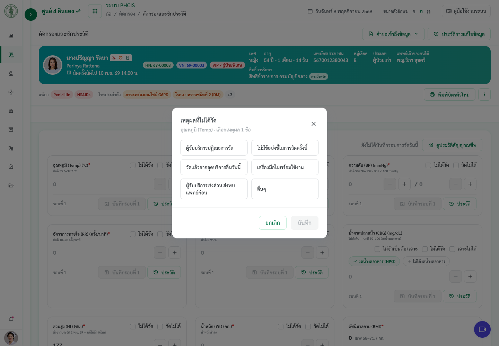
ลำดับ 102 · NCD-45
ช่องทาง Fast Track ที่จุดคัดกรองกลาง/ตู้ Kiosk สำหรับผู้ป่วยเร่งด่วน
ข้อความใน Excel
ช่องทาง Fast Track ที่จุดคัดกรองกลาง/ตู้ Kiosk สำหรับผู้ป่วยเร่งด่วน หน้าจอ: จุดคัดกรองกลาง (Nursing Triage) / ตู้ Kiosk รายละเอียด: • พยาบาลจุดคัดกรองกดเลือก Fast Track ได้ สำหรับผู้ป่วยเร่งด่วน / ผู้สูงอายุ / ผู้นั่งรถเข็น (Wheelchair) / ผู้มีอาการวิกฤต (เช่น ความดันสูงมาก หรือน้ำตาลตก) • บังคับให้พยาบาลคัดกรองระบุเหตุผลการเข้าช่องทาง Fast Track ฟิลด์ที่ต้องบันทึก: • Fast Track (ปุ่ม/Checkbox), เหตุผลการเข้า Fast Track (บังคับ)
แก้อะไร
เพิ่มส่วน "ช่องทาง Fast Track" ใต้ความเร่งด่วน ขั้นสัญญาณชีพ: ติ๊ก "เข้าช่องทาง Fast Track" แล้ว "เหตุผลการเข้า Fast Track" บังคับ (ผู้ป่วยเร่งด่วน · ผู้สูงอายุ · ผู้นั่งรถเข็น (Wheelchair) · ผู้มีอาการวิกฤต (เช่น ความดันสูงมาก หรือน้ำตาลตก) · อื่นๆ ระบุ) · ไม่เลือกเหตุผลแล้วกดส่งต่อ ระบบเตือนและพากลับมาที่ช่อง · ผู้ป่วย Fast Track มีป้าย ▶▶ สีแดงหลังชื่อทุกคิวและบนการ์ดผู้ป่วย และเรียงขึ้นต่อจากผู้ป่วยฉุกเฉิน
ดูยังไง
- เข้าระบบเป็นพยาบาลคัดกรองกลาง
- เปิดเมนูคัดกรอง (/opd/queue) แล้วกดผู้ป่วยที่รอคัดกรอง เช่น HN 67-00003
- ไปขั้น "สัญญาณชีพ" แล้วเลื่อนลงใต้ "ความเร่งด่วน
- ติ๊ก "เข้าช่องทาง Fast Track" → ช่อง "เหตุผลการเข้า Fast Track" ขึ้นมา (บังคับ)
- ลองไม่เลือกเหตุผลแล้วกด "บันทึกและส่งต่อ" ที่ขั้นสุดท้าย → ขึ้น "ยังไม่ได้ระบุเหตุผลการเข้า Fast Track" → กด "ไประบุเหตุผล
- เลือกเหตุผลแล้วส่งต่อ → เปิดคิวคัดกรอง/คิวห้องแพทย์ จะเห็นป้าย ▶▶ หลังชื่อ (ชี้ดูเหตุผล) และแถวอยู่ต่อจากผู้ป่วยฉุกเฉิน
หมายเหตุ
ปุ่ม Fast Track ที่ตู้ Kiosk ให้ทีมน้องทำใน bma.kiosk
ภาพหน้าจอ
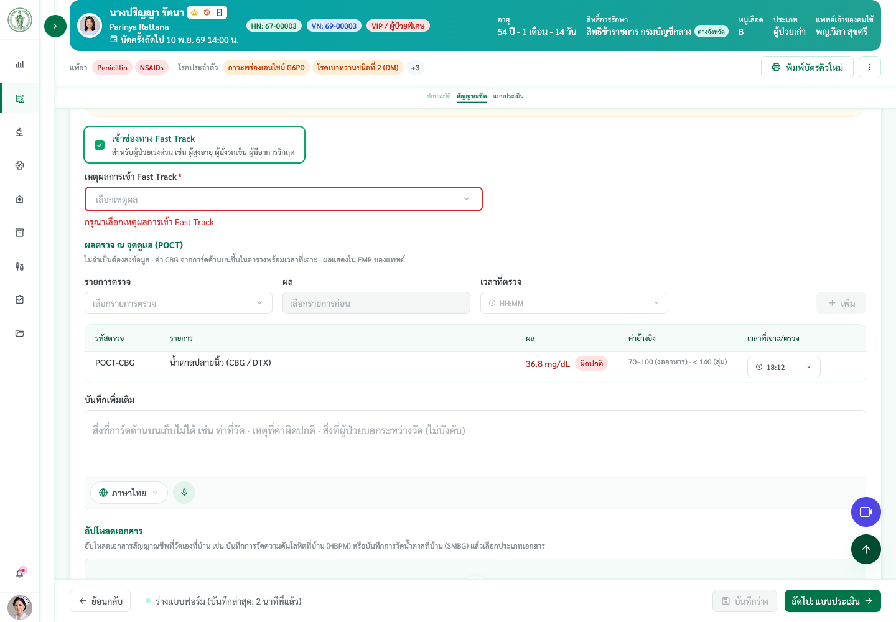
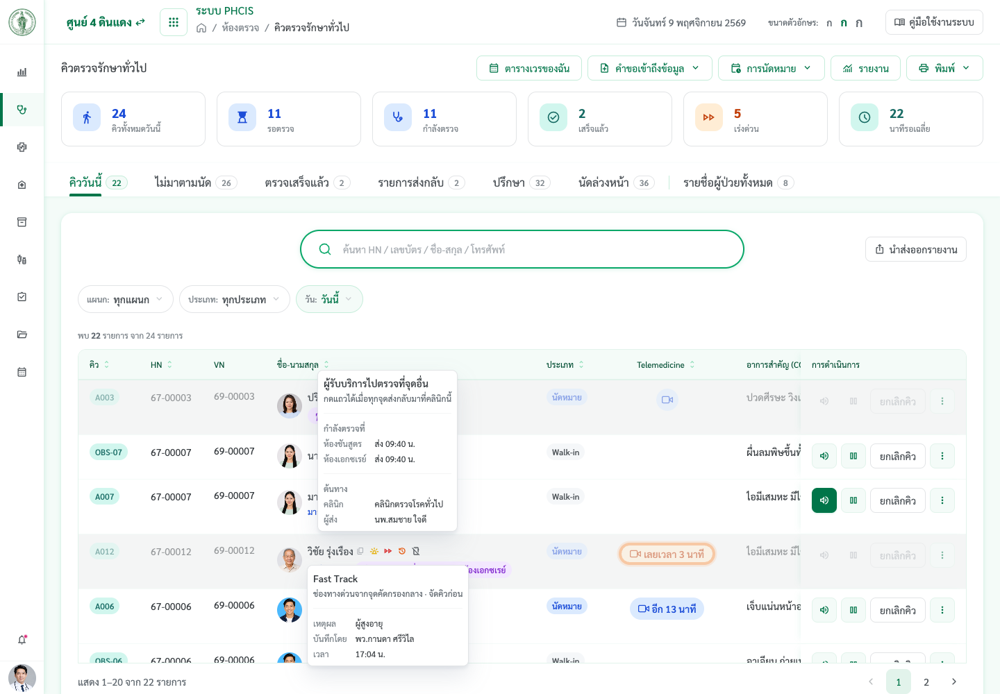
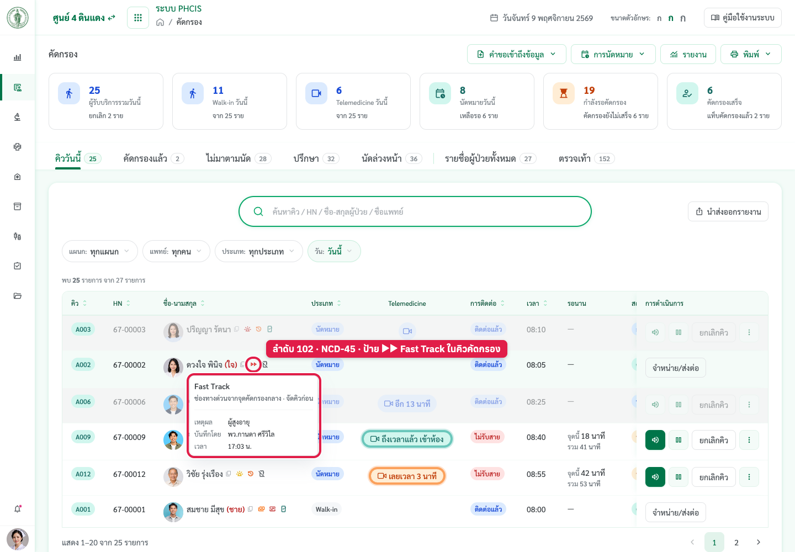
ลำดับ 107 · NCD-46
กราฟแสดงผลความดันโลหิต (BP Graph)
ข้อความใน Excel
กราฟแสดงผลความดันโลหิต (BP Graph) หน้าจอ: หน้า EMR ผู้ป่วย NCDs รายละเอียด: • ปรับสเกลกราฟอัตโนมัติ (Auto Scale) • กดขยายเต็มหน้าจอได้ • แยกแสดงผลรายเดือน (12 เดือน) • เรียกดูข้อมูลย้อนหลังข้ามปีงบประมาณได้
แก้อะไร
เพิ่มมุมมอง "รายเดือน (12 เดือน)" · ปุ่มขยายกราฟเต็มจอ · ปุ่ม "ดูกราฟความดันเต็มจอ" ในหน้าการติดตามการดูแล · ปรับสเกลอัตโนมัติมีอยู่เดิม
ดูยังไง
- เข้าระบบเป็นแพทย์คลินิกเบาหวาน
- เปิดหน้าบันทึกผู้ป่วย HN 67-00001 (/clinic/diabetes/record)
- เอาเมาส์ชี้ค่า "ความดันโลหิต (BP)" บนแถบสัญญาณชีพ → กล่องกราฟทั้งปีขึ้น
- กด "รายเดือน (12 เดือน)" เพื่อดูรายเดือน · เลือก "ปี พ.ศ." เพื่อย้อนหลัง
- กดไอคอนขยาย ⤢ ข้างปุ่ม "วัดซ้ำ" → กราฟเต็มจอ
- อีกทาง: เมนูการติดตามการดูแล (/clinic/diabetes/followup) เลือก HN 67-00007 → แท็บ "ความดันโลหิต" → ปุ่ม "ดูกราฟความดันเต็มจอ
หมายเหตุ
ย้อนหลังเป็นปี พ.ศ. (ม.ค.–ธ.ค.) 10 ปี ไม่ใช่ปีงบประมาณ ตามที่ผู้ใช้กำหนด 22/25 ต.ค. 69 (ใหม่กว่ามติ 20 ต.ค. ซึ่งเขียนว่า "ข้ามปี")
ภาพหน้าจอ
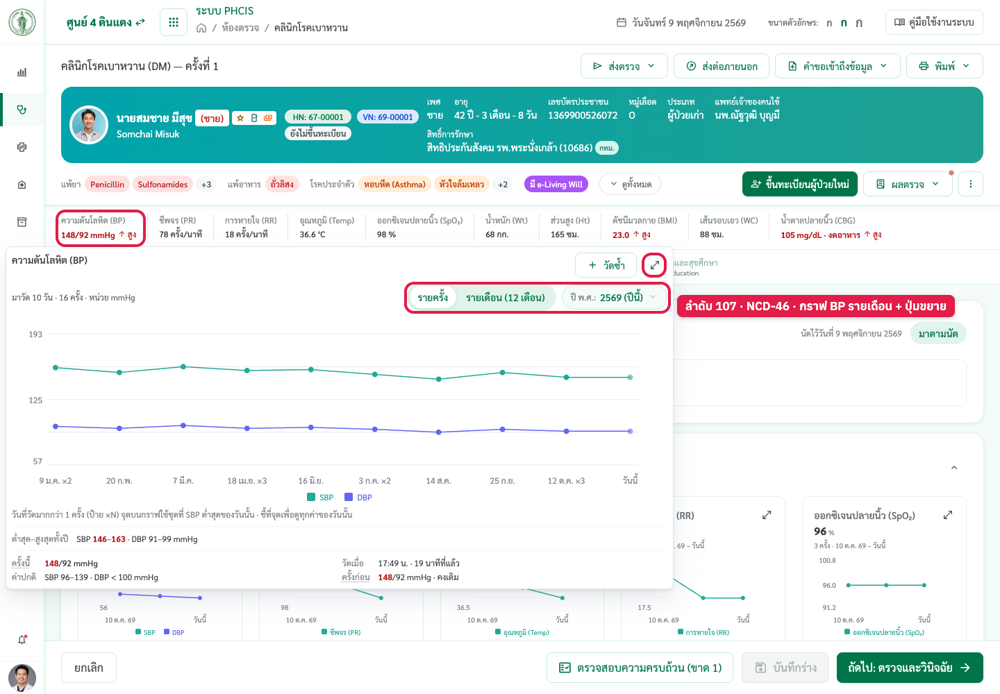
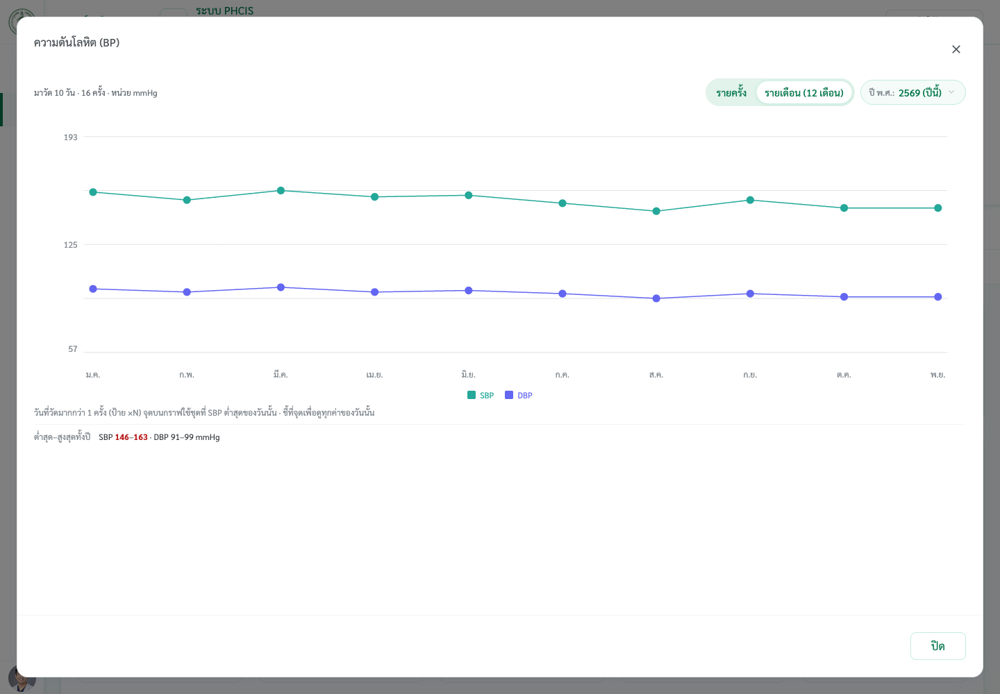
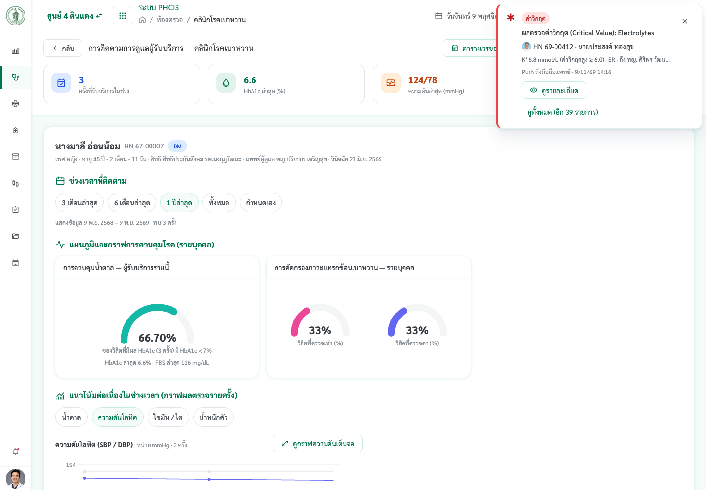
ลำดับ 108 · NCD-47
การบันทึกประวัติเจ็บป่วยเดิมและประวัติครอบครัว
ข้อความใน Excel
การบันทึกประวัติเจ็บป่วยเดิมและประวัติครอบครัว : เห็นควรให้เพิ่มช่องบันทึกประวัติผู้ป่วยในอดีต (Patient History) และประวัติครอบครัว (Family History) ให้สามารถระบุรายละเอียดพร้อมเชื่อมโยงไปยังผังเครือญาติ (Family Tree) โดยให้ระบบดึงข้อมูลประวัติเดิมมาแสดงโดยอัตโนมัติทุกครั้ง
ข้อความในชีตถูกตัดตอนส่งมา — ข้อความนี้มาจากรายงานประชุม คทง.3 ครั้งที่ 5/2569 (20 ต.ค. 69) หน้า 3 ข้อ 2.2
แก้อะไร
ไม่ได้แก้ (ทำไว้ตั้งแต่ 22 ต.ค. 69): ช่อง Past History · Family History + ปุ่มดูข้อมูลครอบครัว
ดูยังไง
- เข้าระบบเป็นแพทย์คลินิกเบาหวาน
- เปิดหน้าบันทึกผู้ป่วย HN 67-00001
- กด "ถัดไป: ตรวจและวินิจฉัย
- แท็บ "บันทึกการตรวจรักษา" → ช่อง "ประวัติการเจ็บป่วยในอดีต (Past History)" และ "ประวัติครอบครัว (Family History)" · ปุ่ม "ดูข้อมูลครอบครัว
หมายเหตุ
ข้อความในชีตถูกตัดตอนส่งมา ใช้ข้อความรายงานประชุม หน้า 3 ข้อ 2.2
ภาพหน้าจอ
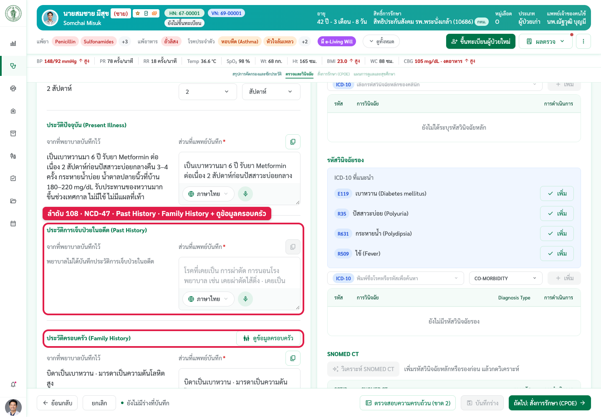
ลำดับ 109 · NCD-48
การปรับปรุงหน้าจอขึ้นทะเบียนโรคเรื้อรัง
ข้อความใน Excel
การปรับปรุงหน้าจอขึ้นทะเบียนโรคเรื้อรัง : เห็นควรให้เปลี่ยนชื่อหน้าจอเป็น "ขึ้นทะเบียนผู้ป่วยโรคเบาหวาน/ความดันโลหิตสูง" พร้อมปรับแก้ไขช่องข้อมูล "ปีที่วินิจฉัย" เป็น "พ.ศ. ที่วินิจฉัย" โดยจัดวางไว้ภายใต้หัวข้อประเภทผู้ป่วย รูปแบบการกรอกข้อมูลเป็นรายการตัวเลือก (Dropdown) เพื่อให้สามารถคำนวณตัวเลข พ.ศ. ได้ และให้ระบบแสดงสรุปจำนวนปีที่เจ็บป่วยด้วยโรคดังกล่าวโดยอัตโนมัติ
ข้อความในชีตถูกตัดตอนส่งมา — ข้อความนี้มาจากรายงานประชุม คทง.3 ครั้งที่ 5/2569 หน้า 3 ข้อ 2.2
แก้อะไร
ชื่อป๊อปอัปเป็น "ขึ้นทะเบียนผู้ป่วยโรคเบาหวาน/ความดันโลหิตสูง" · ช่อง "พ.ศ. ที่วินิจฉัย" (dropdown) ต่อจากประเภทผู้ป่วย · แสดง "ป่วยมาแล้ว N ปี" อัตโนมัติ
ดูยังไง
- เข้าระบบเป็นแพทย์คลินิกเบาหวาน
- เปิดหน้าบันทึกผู้ป่วย HN 67-00001
- กดปุ่ม "ขึ้นทะเบียนผู้ป่วยใหม่" บนการ์ดผู้ป่วย
- ดูหัวป๊อปอัป และช่อง "พ.ศ. ที่วินิจฉัย" ใต้ประเภทผู้ป่วย → เลือกปีแล้วมีข้อความ "ป่วยมาแล้ว N ปี
หมายเหตุ
ข้อความในชีตถูกตัดตอนส่งมา ใช้ข้อความรายงานประชุม หน้า 3 ข้อ 2.2
ภาพหน้าจอ
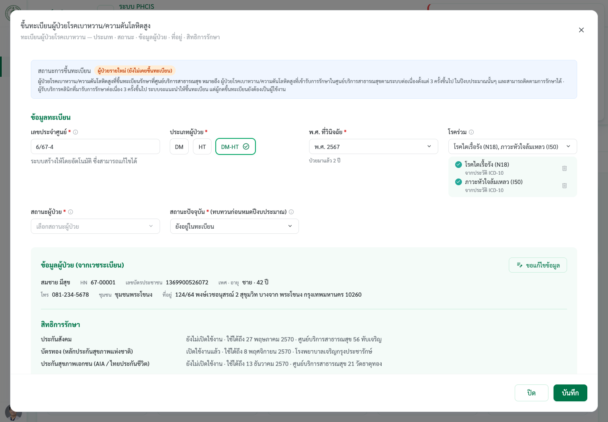
ลำดับ 111 · NCD-50
การลงรหัสการวินิจฉัยโรค (ICD-10)
ข้อความใน Excel
การลงรหัสการวินิจฉัยโรค (ICD-10) : ปรับเพิ่มฟังก์ชันให้รองรับการค้นหารหัสโรคด้วยชื่อโรค อนุญาตให้พยาบาลสามารถช่วยบันทึกรหัสโรคเบื้องต้นได้ และกำหนดเงื่อนไขตรวจสอบ เพื่อป้องกันการเลือกรหัส ICD-10 ซ้ำซ้อนการเข้ารับบริการ (Visit) เดียวกัน
ข้อความในชีตถูกตัดตอนส่งมา — ข้อความนี้มาจากรายงานประชุม คทง.3 ครั้งที่ 5/2569 หน้า 3 ข้อ 2.3
แก้อะไร
ไม่ได้แก้: ค้นรหัส ICD-10 ด้วยชื่อโรคได้
ดูยังไง
- เข้าระบบเป็นแพทย์คลินิกเบาหวาน
- เปิดหน้าบันทึกผู้ป่วย HN 67-00001
- กด "ถัดไป: ตรวจและวินิจฉัย
- การ์ดวินิจฉัย → พิมพ์ชื่อโรค (เช่น เบาหวาน) ในช่องค้นรหัส ICD-10
หมายเหตุ
ข้อความในชีตถูกตัดตอนส่งมา ใช้ข้อความรายงานประชุม หน้า 3 ข้อ 2.3
ภาพหน้าจอ
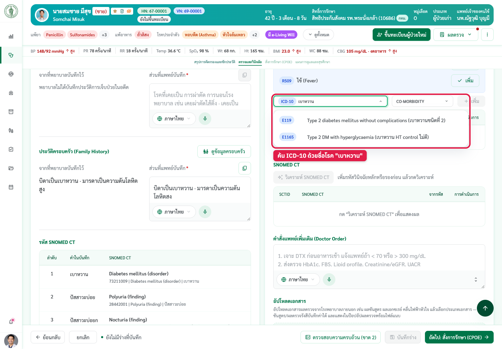
ลำดับ 112 · NCD-51
เปิดสิทธิ์ให้พยาบาลช่วยลงรหัสโรค ICD-10 ได้
ข้อความใน Excel
เปิดสิทธิ์ให้พยาบาลช่วยลงรหัสโรค ICD-10 ได้ หน้าจอ: หน้าตรวจและวินิจฉัย (ส่วนลงรหัส ICD-10)
แก้อะไร
ไม่ได้แก้: พยาบาลหลังตรวจแก้/ลงรหัส ICD-10 ได้
ดูยังไง
- เข้าระบบเป็นพยาบาลหลังตรวจ คลินิกเบาหวาน
- เปิดเมนูตรวจสอบหลังพบแพทย์ (/exit) แล้วกดผู้ป่วย
- ขั้นวินิจฉัย → กดไอคอนดินสอที่การ์ดวินิจฉัยเพื่อแก้รหัส ICD-10
ภาพหน้าจอ
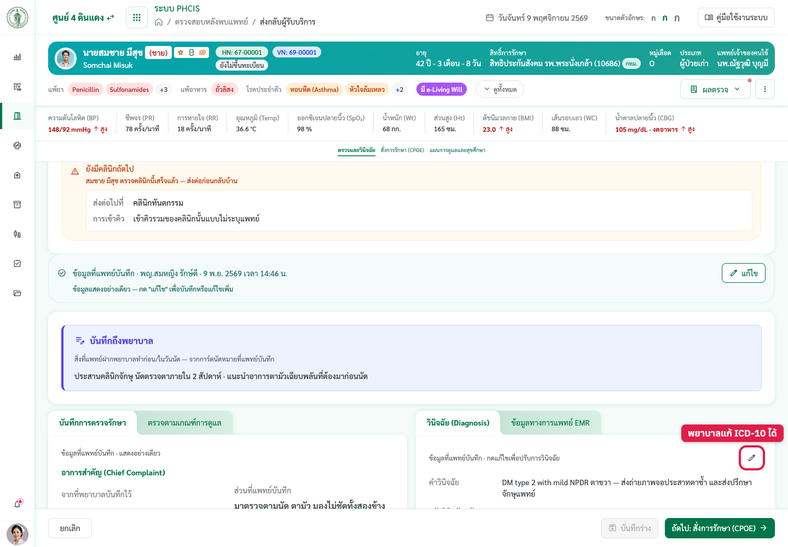
ลำดับ 113 · NCD-52
ลำดับขั้นตอนงานตรวจ: สั่งยา/หัตถการในหน้าเดียวกับตรวจและวินิจฉัย และย้ายการบันทึกนัดหมายไปหน้า 'แผนการดูแลรักษา'
ข้อความใน Excel
ลำดับขั้นตอนงานตรวจ: สั่งยา/หัตถการในหน้าเดียวกับตรวจและวินิจฉัย และย้ายการบันทึกนัดหมายไปหน้า 'แผนการดูแลรักษา' หน้าจอ: หน้าตรวจและวินิจฉัย / หน้าแผนการดูแลรักษา (Care Plan & Education) รายละเอียด: • สั่งยาและหัตถการอยู่ในหน้าเดียวกับการตรวจและวินิจฉัย • สั่งยาก่อนการกำหนดวันนัดหมาย • ย้ายส่วนบันทึกวันนัดหมายจากหน้าตรวจวินิจฉัย ไปไว้ในหน้า 'แผนการดูแลรักษา' (Care Plan & Education)
แก้อะไร
ไม่ได้แก้: คงขั้น "สั่งการรักษา (CPOE)" แยกจากขั้นตรวจและวินิจฉัย
หมายเหตุ
มติ คทง.3 ครั้งที่ 5/2569 หน้า 3 ข้อ 2.3 เห็นชอบให้รวม แต่ผู้ใช้เลือกคงขั้นเดิมไว้ก่อน
ลำดับ 114 · NCD-53
เหตุผลในการสั่งจ่ายและปรับเปลี่ยนยา (Medication Adjustment Reason)
ข้อความใน Excel
เหตุผลในการสั่งจ่ายและปรับเปลี่ยนยา (Medication Adjustment Reason) หน้าจอ: หน้าสั่งยา (CPOE) รายละเอียด: • เพิ่ม Textbox 'เหตุผลในการสั่งจ่ายและปรับเปลี่ยนยา (ถ้ามี)' ใต้รายการสั่งจ่ายยา • ไม่บังคับกรอก (ไม่มีดอกจัน *) • ดึงเหตุผลการปรับยาล่าสุดมาแสดง และกดดูประวัติการสั่งจ่าย/ปรับเปลี่ยนยาย้อนหลังได้
แก้อะไร
ไม่ได้แก้: มีช่องเหตุผลรายแถวยา (ไม่บังคับ) + ประวัติการปรับยา ตามที่ตกลงไว้ 22 ต.ค. 69 ไม่ใช่กล่องเดียวใต้รายการ
ดูยังไง
- เข้าระบบเป็นแพทย์คลินิกเบาหวาน
- เปิดหน้าบันทึกผู้ป่วย HN 67-00001
- ไปขั้น "สั่งการรักษา (CPOE)
- ในแถวยา → ช่องเหตุผลการสั่ง/ปรับยา · ปุ่มประวัติการปรับยา
ภาพหน้าจอ
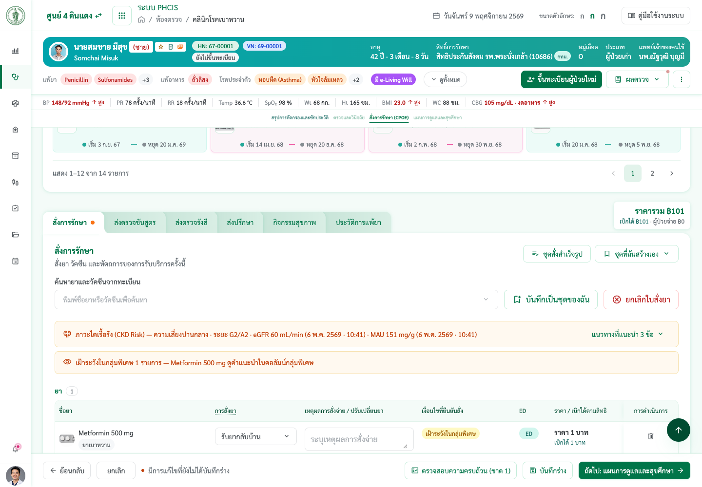
ลำดับ 115 · NCD-54
หน้าหลักแสดงเฉพาะสรุปผลตรวจที่ผิดปกติ และแจ้งเตือนสีแดงกรณีตรวจตา/ตรวจเท้าผิดปกติ
ข้อความใน Excel
หน้าหลักแสดงเฉพาะสรุปผลตรวจที่ผิดปกติ และแจ้งเตือนสีแดงกรณีตรวจตา/ตรวจเท้าผิดปกติ หน้าจอ: หน้า EMR ผู้ป่วย NCDs (หน้าหลัก) รายละเอียด: • ไม่ดึง Summary ทั้งหมดมาแสดงที่หน้าหลัก ดึงเฉพาะส่วนที่ผลตรวจผิดปกติ • Alert ตัวอักษรสีแดงเฉพาะกรณีผลตรวจตาหรือตรวจเท้าผิดปกติ (เช่น Monofilament ผิดปกติ)
แก้อะไร
ไม่ได้แก้ (ทำไว้ตั้งแต่ 22 ต.ค. 69): ผลผิดปกติขึ้นแถบแดงใต้ชื่อแถว
ดูยังไง
- เข้าระบบเป็นแพทย์คลินิกเบาหวาน
- เปิดหน้าบันทึกผู้ป่วย HN 67-00017 (เท้าผิดปกติ) หรือ 67-00012 (ตาผิดปกติ)
- กด "ถัดไป: ตรวจและวินิจฉัย" → แท็บ "ตรวจตามเกณฑ์การดูแล
- แถวตรวจเท้า/ตรวจตา มีแถบแดง "ตรวจเท้าผิดปกติ" / "ตรวจตาผิดปกติ" + รายการที่ผิดปกติ
ภาพหน้าจอ
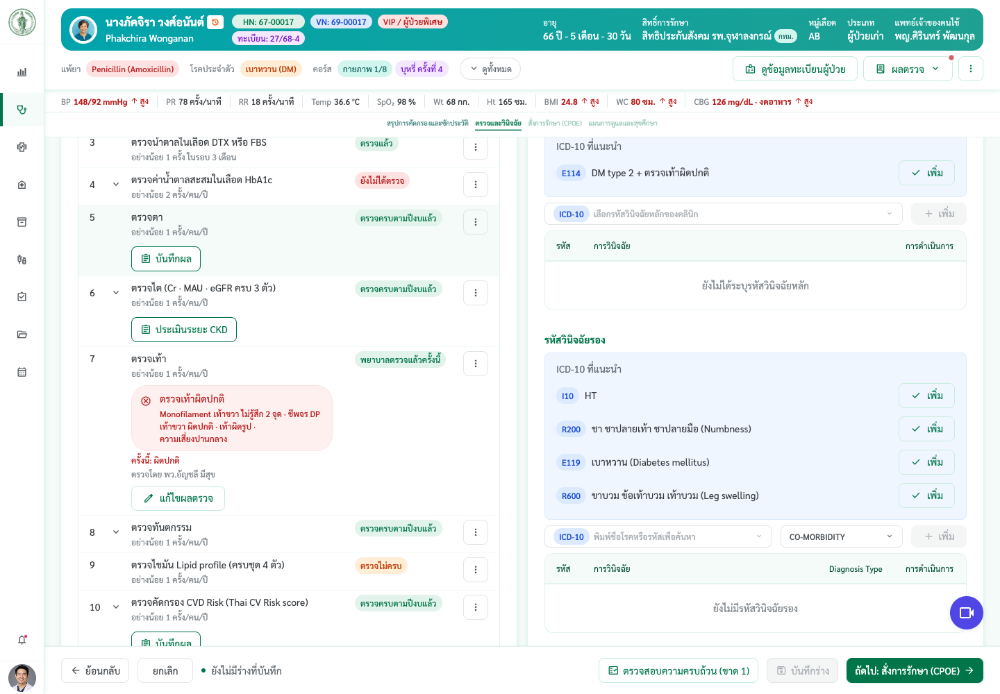
ลำดับ 116 · NCD-55
แบบฟอร์มตรวจตา: เพิ่ม Plan Repeat และย้ายข้อความเงื่อนไขส่งต่อพบจักษุแพทย์มาไว้ในหน้าตรวจตา
ข้อความใน Excel
แบบฟอร์มตรวจตา: เพิ่ม Plan Repeat และย้ายข้อความเงื่อนไขส่งต่อพบจักษุแพทย์มาไว้ในหน้าตรวจตา หน้าจอ: หน้าคัดกรองภาวะแทรกซ้อน NCDs (ส่วนบันทึกการตรวจตา) ฟิลด์ที่ต้องบันทึก: • Plan Repeat: 1 ปี / 9 เดือน / 6 เดือน / 3 เดือน • ข้อความเงื่อนไขการส่งต่อพบจักษุแพทย์ (จัดวางในหน้าตรวจตา)
แก้อะไร
การ์ด "แผนการตรวจซ้ำและการส่งต่อ" ในป๊อปอัปตรวจตา: นัดตรวจตาซ้ำ 1 ปี · 9 เดือน · 6 เดือน · 3 เดือน + ข้อความเงื่อนไขส่งต่อพบจักษุแพทย์ + บรรทัดแดงเมื่อผลเข้าเกณฑ์
ดูยังไง
- เข้าระบบเป็นแพทย์คลินิกเบาหวาน
- เปิดหน้าบันทึกผู้ป่วย HN 67-00012
- กด "ถัดไป: ตรวจและวินิจฉัย" → แท็บ "ตรวจตามเกณฑ์การดูแล
- แถวตรวจตา กด "บันทึกผล" → เลื่อนถึงการ์ดท้ายป๊อปอัป
หมายเหตุ
ข้อความเงื่อนไขรอแบบฟอร์ม Fundus Screening ของคณะทำงานยืนยัน
ภาพหน้าจอ
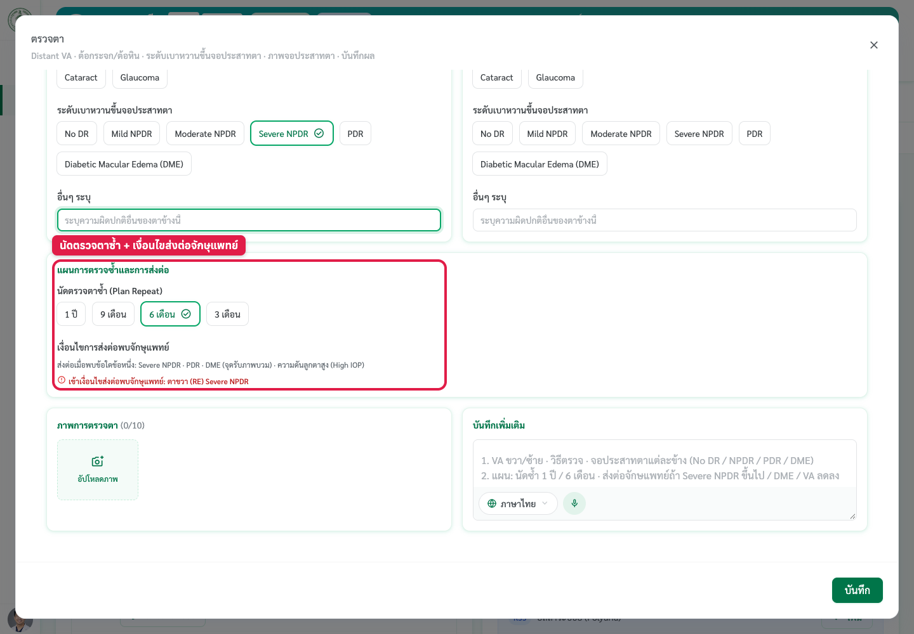
ลำดับ 122 · NCD-56
แยกคำศัพท์ 'ส่งปรึกษา' (Consultation) และ 'ส่งต่อ' (Referral) เป็น 2 ระบบ
ข้อความใน Excel
แยกคำศัพท์ 'ส่งปรึกษา' (Consultation) และ 'ส่งต่อ' (Referral) เป็น 2 ระบบ หน้าจอ: โมดูลส่งปรึกษา / ส่งต่อผู้ป่วย รายละเอียด: • ยกเลิกการใช้คำว่า 'ส่งต่อ' รวมกัน • ส่งปรึกษา: ส่งภายในสังกัดสำนักอนามัย ทั้งภายในศูนย์บริการเดียวกัน (ต่างคลินิก เช่น สังคมสงเคราะห์, กายภาพ, ทันตกรรม, เภสัช) และไปยังศูนย์บริการสาธารณสุขอื่น • ส่งต่อ: ส่งผู้ป่วยไปหน่วยงานภายนอก (โรงพยาบาลภายนอก) ฟิลด์ที่ต้องบันทึก: • ส่งปรึกษา: วัตถุประสงค์การส่งปรึกษา • ส่งต่อ: วัตถุประสงค์/หมายเหตุ (เพื่อการตรวจ / เพื่อการรักษาต่อ)
แก้อะไร
ไม่ได้แก้: ป๊อปอัปส่งต่อแยกปุ่ม "ส่งปรึกษา" (ภายในศูนย์ / ศูนย์อื่นในสำนักอนามัย) กับ "ส่งต่อภายนอกสำนักอนามัย"
ดูยังไง
- เข้าระบบเป็นแพทย์คลินิกเบาหวาน
- เปิดหน้าบันทึกผู้ป่วย HN 67-00001
- ไปขั้นสุดท้าย → กด "บันทึกและส่งต่อ
- แถวบนของป๊อปอัปมีปุ่ม "ส่งปรึกษา" และ "ส่งต่อภายนอกสำนักอนามัย
ภาพหน้าจอ
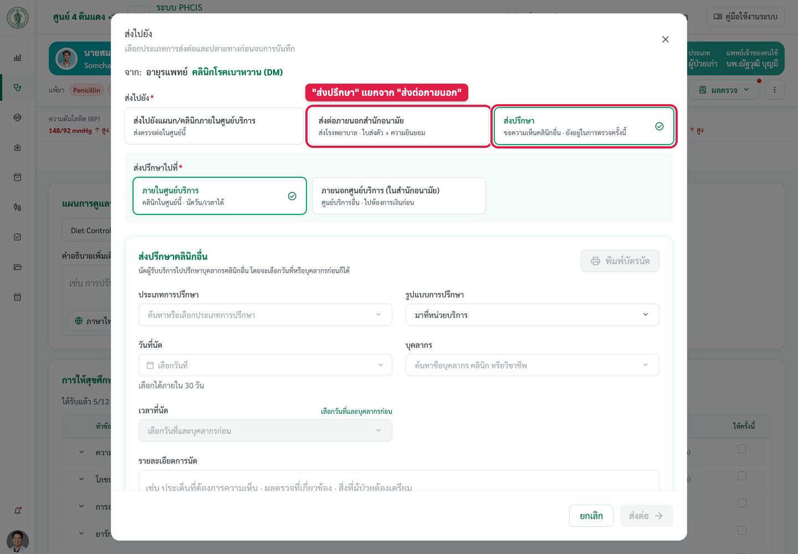
ลำดับ 132 · NCD-57
หน้าจอรายงานคลินิกเบาหวาน/ความดัน: ตัดตัวเลขข้อหัวข้อ (เช่น 5, 8.1.1) ออก
ข้อความใน Excel
หน้าจอรายงานคลินิกเบาหวาน/ความดัน: ตัดตัวเลขข้อหัวข้อ (เช่น 5, 8.1.1) ออก หน้าจอ: หน้ารายงานคลินิก NCDs
แก้อะไร
บนจอไม่มีเลขข้อหน้าชื่อแถว · ไฟล์ส่งออกยังมีเลขข้อตามแบบรายงานกองฯ (ตรวจไฟล์ CSV แล้ว)
ดูยังไง
- เข้าระบบเป็นแพทย์คลินิกเบาหวาน
- เปิดหน้ารายงานคลินิก (/clinic/diabetes/reports)
- ดูตารางตัวชี้วัด → ชื่อแถวไม่มีเลขข้อ
- กด "นำส่งออกรายงาน" → ตัวอย่างไฟล์ยังมีเลขข้อ
ภาพหน้าจอ
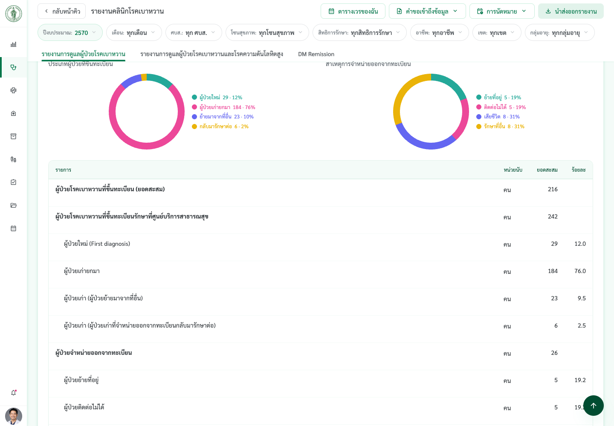
ลำดับ 133 · NCD-58
รายงานจำแนกผู้ป่วยเบาหวานตามระยะเวลาการเป็นโรค
ข้อความใน Excel
รายงานจำแนกผู้ป่วยเบาหวานตามระยะเวลาการเป็นโรค หน้าจอ: หน้ารายงานคลินิก NCDs รายละเอียด: • ช่วง 0–5 ปี • ช่วง >5–10 ปี (6–10 ปี) • ช่วง >10 ปีขึ้นไป (11 ปีขึ้นไป)
แก้อะไร
หมวด "ระยะเวลาการเป็นโรคเบาหวาน" 0–5 · 6–10 · 11 ปีขึ้นไป + กราฟวงกลม (แสดงเฉพาะบนจอ ไม่อยู่ในไฟล์ส่งออก)
ดูยังไง
- เข้าระบบเป็นแพทย์คลินิกเบาหวาน
- เปิดหน้ารายงานคลินิก (/clinic/diabetes/reports)
- เลื่อนลงถึงหมวด "ระยะเวลาการเป็นโรคเบาหวาน
ภาพหน้าจอ
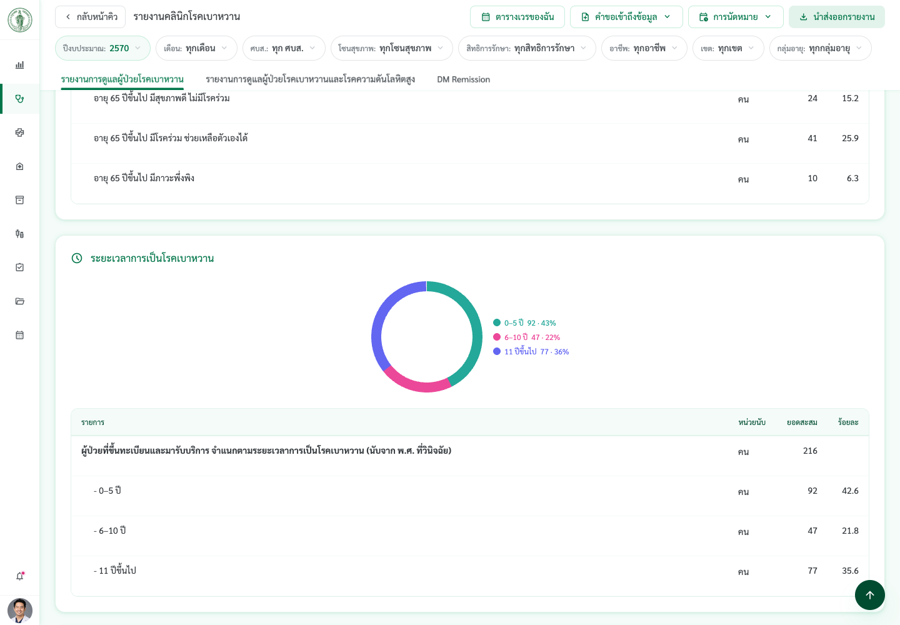
ลำดับ 134 · NCD-59
รายงานกลุ่มผู้สูงอายุ (65 ปีขึ้นไป) จำแนกตามสภาวะสุขภาพ และระดับการควบคุม HbA1c
ข้อความใน Excel
รายงานกลุ่มผู้สูงอายุ (65 ปีขึ้นไป) จำแนกตามสภาวะสุขภาพ และระดับการควบคุม HbA1c หน้าจอ: หน้ารายงานคลินิก NCDs รายละเอียด: • จำแนกตามระดับความเสี่ยง / สุขภาพดี / ไม่มีโรคร่วม / มีภาวะพึ่งพิง • ระดับการควบคุม HbA1c: <7%, <7.5%, <8%, <8.5%
แก้อะไร
ไม่ได้แก้: แยก 3 กลุ่มตามแบบรายงานกองฯ (สุขภาพดี ไม่มีโรคร่วม · มีโรคร่วม ช่วยเหลือตัวเองได้ · มีภาวะพึ่งพิง) แต่ละกลุ่มมีระดับ HbA1c <7 · <7.5 · <8 · <8.5
ดูยังไง
- เข้าระบบเป็นแพทย์คลินิกเบาหวาน
- เปิดหน้ารายงานคลินิก (/clinic/diabetes/reports)
- หาแถว "ค่า HbA1c ของผู้สูงอายุ 65 ปีขึ้นไป …
หมายเหตุ
ไม่มีกลุ่ม "เสี่ยง" แยก ถ้าต้องการให้แจ้ง
ภาพหน้าจอ
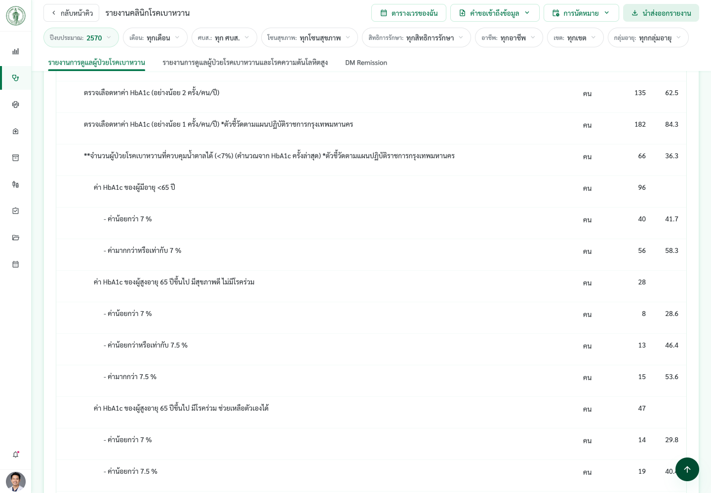
ลำดับ 135 · NCD-60
รายงานการส่งต่อผู้ป่วย: แยกสถิติการส่งต่อภายนอกและการส่งปรึกษาภายในออกจากกัน
ข้อความใน Excel
รายงานการส่งต่อผู้ป่วย: แยกสถิติการส่งต่อภายนอกและการส่งปรึกษาภายในออกจากกัน หน้าจอ: หน้ารายงานการส่งต่อ
แก้อะไร
บนจอแยก "การส่งปรึกษา (ภายในสังกัดสำนักอนามัย)" กับ "การส่งต่อ (โรงพยาบาลภายนอกสังกัด)" · ไฟล์ส่งออกใช้คำเดิมข้อ 10.1–10.3
ดูยังไง
- เข้าระบบเป็นแพทย์คลินิกเบาหวาน
- เปิดหน้ารายงานคลินิก (/clinic/diabetes/reports)
- เลื่อนถึงหมวดส่งปรึกษา/ส่งต่อ · ดูการ์ด "ส่งปรึกษาหรือส่งต่อ" ด้านบน
ภาพหน้าจอ
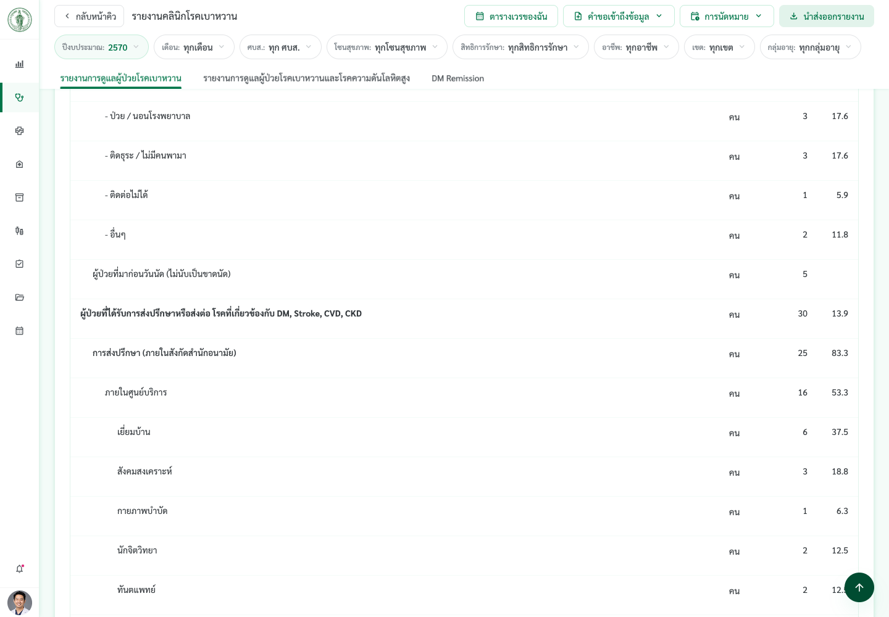
ลำดับ 136 · NCD-61
รายงานสถิติการส่งต่อจำแนกตามสาเหตุหลัก โดยดึงจากรหัส ICD-10
ข้อความใน Excel
รายงานสถิติการส่งต่อจำแนกตามสาเหตุหลัก โดยดึงจากรหัส ICD-10 หน้าจอ: หน้ารายงานการส่งต่อ รายละเอียด: • สาเหตุหลัก: เบาหวาน, ความดันโลหิตสูง, โรคหลอดเลือดหัวใจ, โรคไตเรื้อรัง
แก้อะไร
หัวข้อ "สาเหตุหลักในการส่งปรึกษาหรือส่งต่อ (จากรหัส ICD-10 หลักของ Visit ที่ส่ง)" แต่ละโรคมีช่วงรหัส เช่น เบาหวาน (E10–E14) · ไฟล์ CSV มีครบ 4 โรค
ดูยังไง
- เข้าระบบเป็นแพทย์คลินิกเบาหวาน
- เปิดหน้ารายงานคลินิก (/clinic/diabetes/reports)
- หาแถว "สาเหตุหลักในการส่งปรึกษาหรือส่งต่อ …
ภาพหน้าจอ
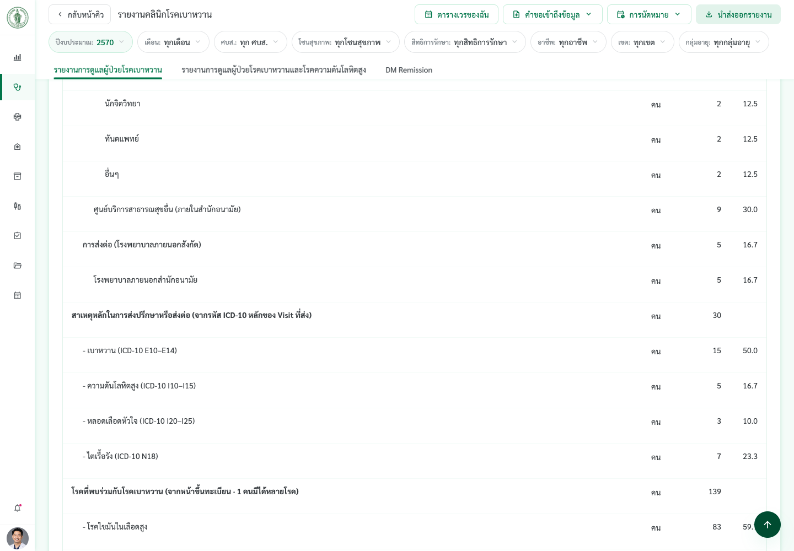